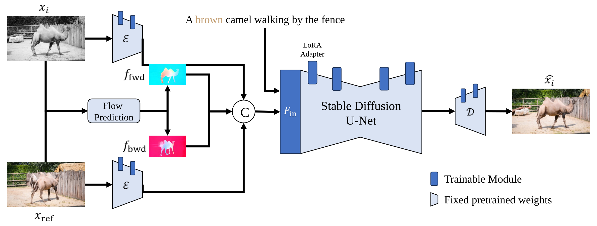

Video colorization aims to generate semantically appropriate and temporally consistent colors for grayscale videos. Existing diffusion-based approaches often face challenges in high training resources or poor cross-frame consistency due to their reliance on stochastic denoising processes. To address these limitations, this paper proposes an optical flow-guided diffusion framework that explicitly utilizes inter-frame motion to enhance temporal coherence. We explicitly inject optical flow into the network during training and introduce an optical flow-guided cross-frame attention mechanism, which leverages precise optical flow correspondences to modulate attention between frames during sampling. This ensures stable and artifact-free color propagation under complex motion patterns. Moreover, our framework incorporates reference images as additional guidance to improve controllability and color fidelity. To reduce dependence on large-scale real-world video data, we design a hybrid data synthesis pipeline that first pre-trains the model using synthesized optical flow-image pairs and then fine-tunes it on a limited set of high-quality videos generated by modern video synthesis models. Experiments demonstrate that our method achieves superior performance in terms of training efficiency, temporal consistency, color realism, and user controllability compared to existing state-of-the-art approaches.

Demo results of FlowVCo for coherent and controllable video colorization.
@inproceedings{si2026towards,
title = {Towards Coherent Video Colorization: When Optical Flow Meets Image Diffusion Models},
author = {Si, Wen and Li, Yifan and Zhang, Luyao and Yang, Shuai and Liu, Jiaying},
booktitle = {IEEE International Conference on Image Processing (ICIP)},
year = {2026}
}